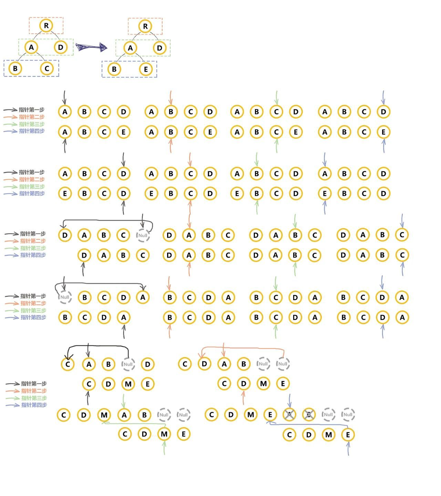

日常面试题库
夜寒花碎 2021/10/19 todo
# html
# 1.假设一个网页嵌入一个 iframe,如何更改 iframe 内 dom 样式？
# css
# 1. 请说说 display:none 和 visibility:hidden;有什么区别？
# 2. 请问 span 标签设置宽高有效吗？设置 margin、padding 有效吗？
# 3. 请 CSS3 实现一个秒针绕一点转动的效果
# javascript
# 1. js 中的数据格式
- 值类型(基本类型)：字符串（String）、数字(Number)、布尔(Boolean)、对空（Null）、未定义（Undefined）、Symbol。
- 引用数据类型：对象(Object)、数组(Array)、函数(Function)。
# 2. js 中如何判断数据格式
- typeof 判断
类型 结果 string string number number Boolean boolean null null undefined undefined Symbol symbol Object object Array object Function function - instanceof 检测实例对象（参数）的原型链上是否出现构造函数的 prototype。
- Object.prototype.toString()
# 3. JAVAScript 清空数组，提供几种方法
- 方法一： splice
- 方法二： length 赋值为 0
- 方法三： 赋值为[]
# 4. 请问 HTML 中如何通过<script>加载 JAVAScript 脚本？如果同步阻塞加载，脚本过大影响页面渲染，如何优化？
# 5. 请回答当我们在 new 操作符时，它在对象操作的过程中具体做了什么
# 6. 请简述 domready 和 onload 的区别，以及分别都是在什么时候由谁触发？
# 7. 请创建一个长度为 100 的数组，在里面存入[0,1,2,...,99]
# 8. 请谈谈你对 js 继承和原型链的理解
# 9. 请回答 DOM 中对应创建、移除、追加、复制、查找节点的方法是什么？
# 10. 请写出代码的执行结果：
console.log(1)
setTimeout(function() {
console.log(2)
}, 0)
console.log(3)
1
2
3
4
5
2
3
4
5
# 11. 请谈一谈 JAVAscript 的作用域和 this
# 12. 请问如何实现 JS 限流调度器？
# 13. 请描述一下解决跨域问题的方法
# vue
# 1. 写 React / Vue 项目时为什么要在列表组件中写 key，其作用是什么？
vue 和 react 都是采用 diff 算法来对比新旧虚拟节点，从而更新节点。在 vue 的 diff 函数中（建议先了解一下 diff 算法过程）。
在交叉对比中，当新节点跟旧节点头尾交叉对比没有结果时，会根据新节点的 key 去对比旧节点数组中的 key，从而找到相应旧节点（这里对应的是一个 key => index 的 map 映射）。如果没找到就认为是一个新增节点。而如果没有 key，那么就会采用遍历查找的方式去找到对应的旧节点。一种一个 map 映射，另一种是遍历查找。相比而言。map 映射的速度更快。
# Vue 的生命周期方法有哪些？一般在哪一步发起请求及原因
- beforeCreate 在实例初始化之后，数据观测(data observer) 和 event/watcher 事件配置之前被调用。
- created 实例已经创建完成之后被调用。在这一步，实例已完成以下的配置：数据观测(data observer)，属性和方法的运算， watch/event 事件回调。这里没有$el
- beforeMount 在挂载开始之前被调用：相关的 render 函数首次被调用。
- mounted el 被新创建的 vm.$el 替换，并挂载到实例上去之后调用该钩子。
- beforeUpdate 数据更新时调用，发生在虚拟 DOM 重新渲染和打补丁之前。
- updated 由于数据更改导致的虚拟 DOM 重新渲染和打补丁，在这之后会调用该钩子。
- beforeDestroy 实例销毁之前调用。在这一步，实例仍然完全可用。
- destroyed Vue 实例销毁后调用。调用后，Vue 实例指示的所有东西都会解绑定，所有的事件监听器会被移除，所有的子实例也会被销毁。该钩子在服务器端渲染期间不被调用。 补充：
- created 实例已经创建完成，因为它是最早触发的原因可以进行一些数据，资源的请求。(服务端渲染支持 created 方法)
- mounted 实例已经挂载完成，可以进行一些 DOM 操作
- beforeUpdate 可以在这个钩子中进一步地更改状态，这不会触发附加的重渲染过程。
- updated 可以执行依赖于 DOM 的操作。然而在大多数情况下，你应该避免在此期间更改状态，因为这可能会导致更新无限循环。该钩子在服务器端渲染期间不被调用。
- destroyed 可以执行一些优化操作,清空定时器，解除绑定事件
# 生命周期钩子是如何实现的?
- Vue 的生命周期钩子就是回调函数而已，当创建组件实例的过程中会调用对应的钩子方法
- 内部主要是使用 callHook 方法来调用对应的方法。核心是一个发布订阅模式，将钩子订阅好（内部采用数组的方式存储），在对应的阶段进行发布！
# nextTick 在哪里使用?原理是?
- nextTick 中的回调是在下次 DOM 更新循环结束之后执行的延迟回调。在修改数据之后立即使用这个方法，获取更新后的 DOM。原理就是异步方法(promise,mutationObserver,setImmediate,setTimeout)经常与事件环一起来问(宏任务和微任务)
- vue 多次更新数据，最终会进行批处理更新。内部调用的就是 nextTick 实现了延迟更新，用户自定义的 nextTick 中的回调会被延迟到更新完成后调用，从而可以获取更新后的 DOM。
# Vue 中组件的 data 为什么是一个函数?
每次使用组件时都会对组件进行实例化操作，并且调用 data 函数返回一个对象作为组件的数据源。这样可以保证多个组件间数据互不影响
# 请说下 v-if 和 v-show 的区别
- v-if 在编译过程中会被转化成三元表达式,条件不满足时不渲染此节点。
- v-show 会被编译成指令，条件不满足时控制样式将对应节点隐藏 （内部其他指令依旧会继续执行）
- 频繁控制显示隐藏尽量不使用 v-if，v-if 和 v-for 尽量不要连用
# vue 进阶
# 为什么虚拟 dom 会提高性能?
- 虚拟 dom 相当于在 js 和真实 dom 中间加了一个缓存，利用 dom diff 算法避免了没有必要的 dom 操作，从而提高性能。
具体实现步骤如下：
- 用 JavaScript 对象结构表示 DOM 树的结构；然后用这个树构建一个真正的 DOM 树，插到文档当中
- 当状态变更的时候，重新构造一棵新的对象树。然后用新的树和旧的树进行比较，记录两棵树差异
- 把 2 所记录的差异应用到步骤 1 所构建的真正的 DOM 树上，视图就更新了。
# Vue 中的 diff 原理
- Vue 的 diff 算法是平级比较，不考虑跨级比较的情况。内部采用深度递归的方式 + 双指针的方式进行比较。
具体： 
- 先比较是否是相同节点
- 相同节点比较属性,并复用老节点
- 比较儿子节点，考虑老节点和新节点儿子的情况
- 优化比较：头头、尾尾、头尾、尾头
- 比对查找进行复用 Vue3 中采用最长递增子序列实现 diff 算法
# Vue.mixin 的使用场景和原理？
- Vue.mixin 的作用就是抽离公共的业务逻辑，原理类似“对象的继承”，当组件初始化时会调用 mergeOptions 方法进行合并，采用策略模式针对不同的属性进行合并。如果混入的数据和本身组件中的数据冲突，会采用“就近原则”以组件的数据为准。
- mixin 中有很多缺陷 "命名冲突问题"、"依赖问题"、"数据来源问题",这里强调一下 mixin 的数据是不会被共享的！
# Vue 的组件渲染流程? （父子组件渲染的先后顺序，组件是如何渲染到页面上的 ）
- 在渲染父组件时会创建父组件的虚拟节点,其中可能包含子组件的标签
- 在创建虚拟节点时,获取组件的定义使用 Vue.extend 生成组件的构造函数。
- 将虚拟节点转化成真实节点时，会创建组件的实例并且调用组件的$mount 方法。
- 所以组件的创建过程是先父后子
# Vue 中模板编译原理？
如何将 template 转换成 render 函数(这里要注意的是我们在开发时尽量不要使用 template，因为将 template 转化成 render 方法需要在运行时进行编译操作会有性能损耗，同时引用带有 compiler 包的 vue 体积也会变大。默认.vue 文件中的 template 处理是通过 vue-loader 来进行处理的并不是通过运行时的编译 - 后面我们会说到默认 vue 项目中引入的 vue.js 是不带有 compiler 模块的)。
- 将 template 模板转换成 ast 语法树 - parserHTML
- 对静态语法做静态标记 - markUp
- 重新生成代码 -codeGen 补充：
- 模板引擎的实现原理就是 new Function + with 来进行实现的
- vue-loader 中处理 template 属性主要靠的是 vue-template-compiler 模块
# react
# react 进阶
# webpack
# webpack Loader 和 Plugin 的区别？
- Loader 本质就是一个函数，在该函数中对接收到的内容进行转换，返回转换后的结果。 因为 Webpack 只认识 JavaScript，所以 Loader 就成了翻译官，对其他类型的资源进行转译的预处理工作。
- Plugin 就是插件，基于事件流框架 Tapable，插件可以扩展 Webpack 的功能，在 Webpack 运行的生命周期中会广播出许多事件，Plugin 可以监听这些事件，在合适的时机通过 Webpack 提供的 API 改变输出结果。
- Loader 在 module.rules 中配置，作为模块的解析规则，类型为数组。每一项都是一个 Object，内部包含了 test(类型文件)、loader、options (参数)等属性。
- Plugin 在 plugins 中单独配置，类型为数组，每一项是一个 Plugin 的实例，参数都通过构造函数传入。
# 工程化
# 前端为什么要进行打包和构建？
- 代码层面：
- 体积更小（Tree-shaking、压缩、合并），加载更快
- 编译高级语言和语法（TS、ES6、模块化、scss）
- 兼容性和错误检查（polyfill,postcss,eslint）
- 研发流程层面：
- 统一、高效的开发环境
- 统一的构建流程和产出标准
- 集成公司构建规范（提测、上线）
- 代码层面：
# 代码 js
# 1. 请发布—订阅模式实现一个全局的 Event 对象来实现
# 2. 请编写 JAVAscript 深度克隆函数 deepClone
# 3. 输入一个正数 N, 输出所有和为 N 的连续正数序列. 例如输入 15, 结果: [[1, 2, 3, 4, 5], [4, 5, 6], [7, 8]]
# 4. 封装函数解析 obj
let obj = {
a: {
b: {
c: {
d: 1,
},
},
},
e: 2,
f: {
g: 3,
},
}
// result
;[[a, e, f], [b, g], [c], [d]]
1
2
3
4
5
6
7
8
9
10
11
12
13
14
15
2
3
4
5
6
7
8
9
10
11
12
13
14
15